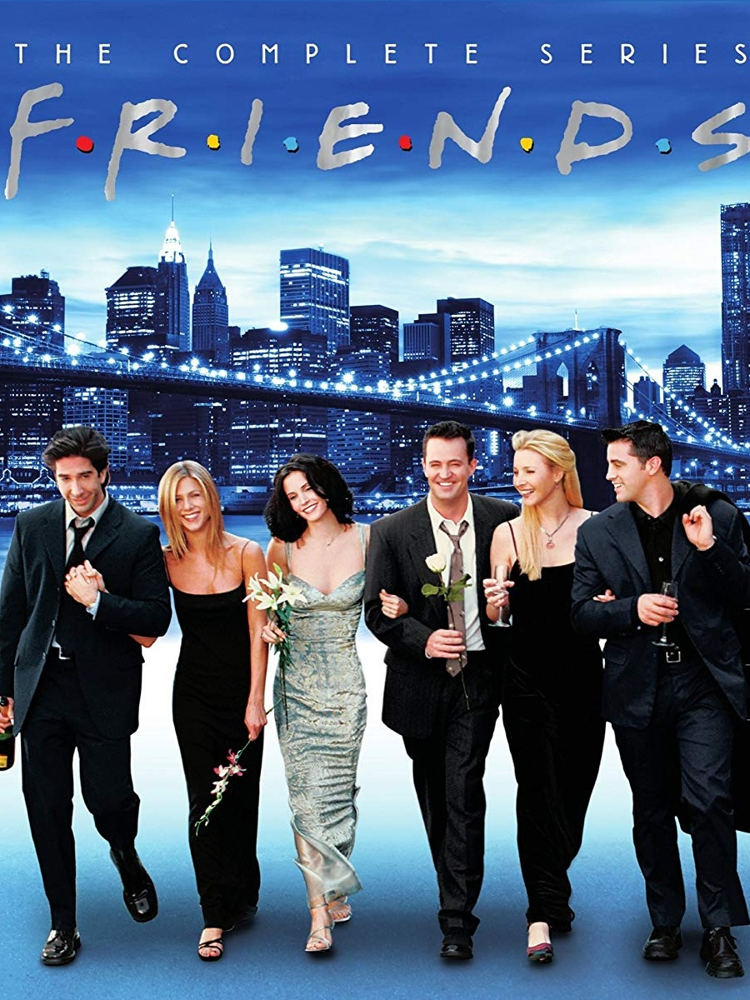
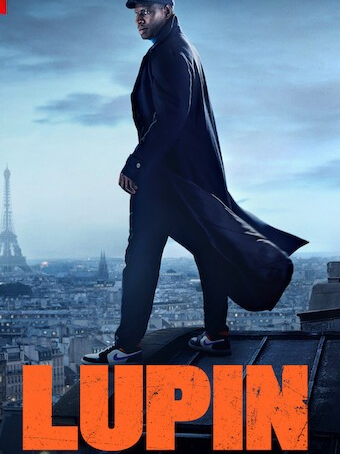
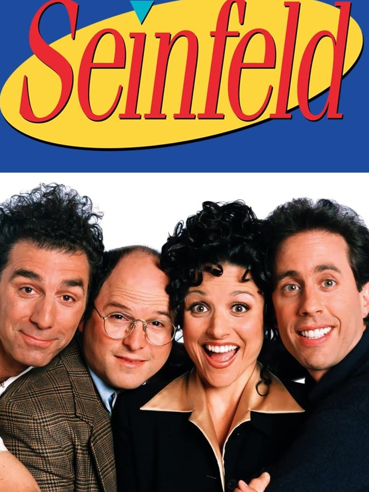
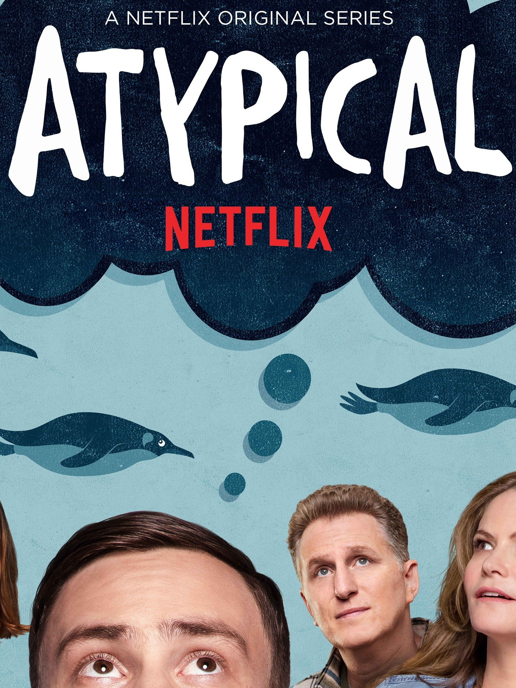

MY TOP 10 FAVORITE SHOWS
Top 1: How I Met Your Mother

In New York Citys Manhattan, the sitcom covers Ted Mosbys exploits as a single man and his love life with his group of pals. Ted uses the events from September 2005 to May 2013 that led him to meet their mother for his children Luke and Penny.
Top 2: Friends
Friends is a 90's show about 6 pals who have shared nearly every life experience. They reach their 3rd decade of life in New York. They have each other's support to assist them overcome the challenges that life throws at them.
Top 3: Modern Family

The series tells the story of a family from the point of view of an unseen documentary filmmaker. Modern Family follows three different types of families who are linked by Jay Pritchett's children, Claire and Mitchell, who live in the Los Angeles area.
Top 4: The Big Bang Theory

Leonard and Sheldon, bright physicists who comprehend how the universe works. However, none of their brilliance aids them in interacting with others, particularly women. All of that changes when Penny, a free-spirited beauty, moves in next door.
Top 5: Brooklyn Nine-Nine

Det. Jake Peralta and his colleagues patrol the NYPD's 99th Precinct in this comedy series. Captain Ray Holt takes command of the 99th Precinct in Brooklyn, which includes Det. Jake Peralta, a skilled but careless detective who is used to doing whatever he wants.
Top 6: Lupin
Assane Diop, a gentleman burglar, goes out to avenge his father for an injustice perpetrated by a wealthy family, inspired by Arsène Lupin's escapades. He is a gentleman burglar, goes out to avenge his father for an injustice perpetrated by a wealthy family.
Top 7: Kim’s Convenience

The Kim family owns a convenience store and is working hard to provide Janet and Jung with a better life in Canada. The difficulties of running a true 'Mom and Pop' shop while raising children in a culture that isn't your own are brilliantly explored.
Top 8: Seinfeld
Jerry and his buddies go about their daily lives, discussing different odd scenarios to which we can all relate, according to the premise of this sitcom. Jerry's oddball friends' unusual characteristics add to the hilarity.
Top 9: Atypical
Sam, an autistic 18-year-old, believes it's time to find a girlfriend, a trip that leads Sam's mother on her own life-altering path as her son pursues greater freedom. Atypical is a coming-of-age story about Sam who strives for love and independence.
Top 10: Emily in Paris

Emily who travels to France wants to bring an American perspective to Savoir, a French marketing business. There, she tries to excel in the business while looking for love and dealing with a cultural clash with her "boring" and mundane childhood in the Midwest of the United States.